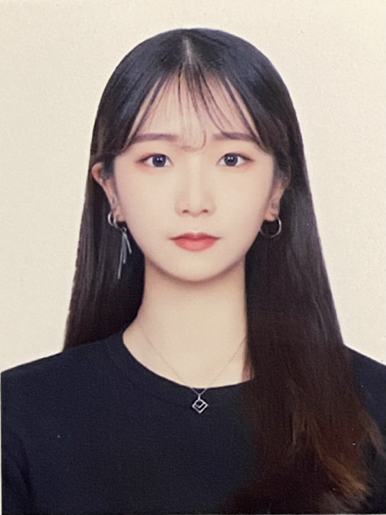

박보경 (Park, bokyung)

전화번호
: 010-7932-2037
이메일
: vo_v_97@naver.com
Who am I?
디지털과 미디어를 활용한 경영에 관심을 가지게 되어 디지털기술경영학과에 입학했습니다.
현재 데이터베이스 설계 및 개발, 웹프로그래밍, 융복합 미디어 마케팅 등의 강의를 듣고 있습니다.
디지털기술경영학과의 여러 가지 파트를 배운 후 가장 적성에 맞는 파트에 대해 더 자세히 공부할 예정입니다.
Skills
사용 언어
- html
사용 툴
- Visual Studio Code
Academic
출신학교
전공
졸업구분
업성고등학교 X 졸업
정화예술대학교 실용음악학부 졸업
호서대학교 디지털기술경영학과 재학